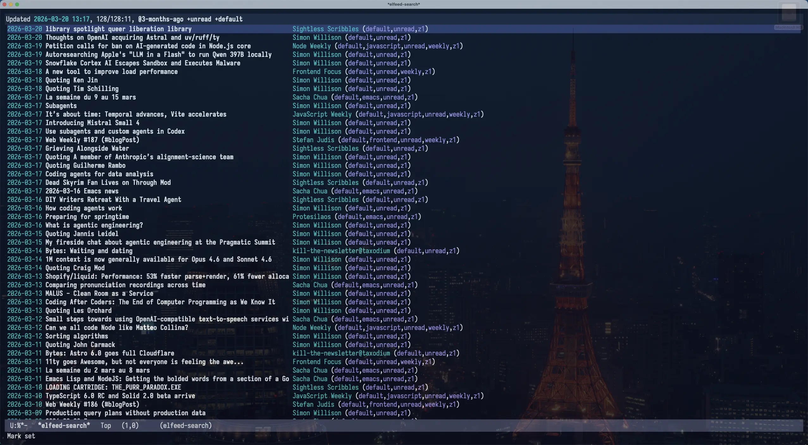

在 Emacs 中用 Elfeed 阅读订阅流
{kind=link}

在 Emacs 里，可以用 skeeto/elfeed 阅读订阅流（关于订阅流），为了方便管理订阅流，我还会结合 remyhonig/elfeed-org 一起用，在一个 org 文件里维护所有的订阅。
在 Emacs 中可以这样配置：
(defconst spike-leung/elfeed-org-files "~/.emacs.d/elfeed.org"
"My elfeed org files path.")
(use-package elfeed
:custom
(elfeed-search-filter "@3-months-ago +unread +default"))
(use-package elfeed-org
:hook ((after-init . elfeed-org))
:init (setq rmh-elfeed-org-files (list spike-leung/elfeed-org-files)))
如果使用 elfeed-org ，注意在执行 elfeed 前先执行 elfeed-org ，让 elfeed-org 将 org 文件的订阅流转换成 elfeed 需要的格式，可以通过 hook 实现。
elfeed.org 是我的 elfeed-org 配置文件，基于 Kedara 分享的 Organising my feeds using Permaculture principles 整理。
elfeed.org 的结构大致如下：
* feed :elfeed:
** Z0:Home :z0:default:
*** [[https://taxodium.ink/rss.xml][taxodium]]
** Z1:Porch :z1:default:
*** [[https://anotherdayu.com/feed/][Another Dayu]]
*** [[https://antfu.me/feed.xml][Anthony Fu]] :frontend:
要想让 elfeed-org 识别出订阅流，需要在 heading 上 添加 rmh-elfeed-org-tree-id （默认是 elfeed ）作为 tag。
tag 会被下一层级的 heading 继承，可以方便地归类订阅流。
配置好之后，在 Emacs 里只需要执行 M-x elfeed ，就可以看到所有的订阅流了。另外，可以看看 elfeed 的过滤条件，方便过滤想看的订阅流。
下面再分享一些方法，可以让 elfeed 的使用体验更好。
* feed :elfeed:
** Z0:Home :z0:default:
*** [[https://taxodium.ink/rss.xml][taxodium]]
** Z1:Porch :z1:default:
*** [[https://anotherdayu.com/feed/][Another Dayu]]
*** [[https://antfu.me/feed.xml][Anthony Fu]] :frontend:
观察 elfeed-org 的 链接，你会发现基本都是 rss.xml 或者 feed.xml ，点击链接跳转过去显示的就是一个 XML 页面，一般来说都是密密麻麻的字，不适合阅读（你也可以 让你的 RSS/Atom feed 更好看）。
我更希望点击链接的时候，跳转到对应的博客主页。
要实现这个功能，只需要在点击链接的时候，提取订阅流的域名，再跳转到域名就好了。
(defconst spike-leung/elfeed-org-files "~/.emacs.d/elfeed.org"
"My elfeed org files path.")
(defun spike-leung/org-open-rss-feed-as-site-in-elfeed-org-files (orig-fun &rest args)
"Advice for `org-open-at-point' to redirect RSS links only in a specific file."
(let* ((element (org-element-context))
(link (and (eq (org-element-type element) 'link)
(org-element-property :raw-link element))))
(if (and buffer-file-name (string-equal
(expand-file-name (buffer-file-name))
(expand-file-name spike-leung/elfeed-org-files))
link (string-match-p (rx (or "rss" "feed" "atom" "xml")) link))
(let* ((url-parts (url-generic-parse-url link))
(scheme (url-type url-parts))
(host (url-host url-parts))
(site-url (concat scheme "://" host)))
(message "Opening site for feed: %s" site-url)
(browse-url site-url))
(apply orig-fun args))))
(advice-add 'org-open-at-point :around #'spike-leung/org-open-rss-feed-as-site-in-elfeed-org-files)
org-mode 中打开链接的方式是 org-open-at-point ，可以给这个方法 添加 一个 advice，如果 当前是 elfeed-org 文件，并且链接是 订阅流链接，则从中 解析域名，然后 调用 browse-url 跳转访问。
elfeed 支持很多 过滤条件，可以使用 elfeed-search-live-filter 设置过滤器并实时预览过滤结果。我最常设置的过滤条件是过滤博客名字，但现在我订阅了 300 多个订阅流，很多名字我都记不下来。我想到的一个办法是把所有订阅流的名字罗列出来，然后让我从中选择，这样我就不需要记了。
下面我分享一下是如何实现的。
完整代码
(defconst spike-leung/elfeed-search-filter "@3-months-ago +unread"
"Query string filtering shown entries.")
(defun spike-leung/get-feed-candidates (&optional level)
"Extract headings title from `rmh-elfeed-org-files' as consult candidates.
If LEVEL exist, filter heading which level is greater or equal LEVEL."
(mapcan
(lambda (elfeed-org-file)
(with-current-buffer (or (find-buffer-visiting elfeed-org-file)
(find-file-noselect elfeed-org-file))
(delq nil
(org-element-map (org-element-parse-buffer 'headline) 'headline
(lambda (hl)
;; property 的值可以在这里找： https://orgmode.org/worg/dev/org-element-api.html
(when (or (null level) (>= (org-element-property :level hl) level))
(let* ((raw-title (org-element-property :raw-value hl))
(title (org-link-display-format raw-title))
(annotation (org-entry-get hl "description"))
(feed-url (when (string-match org-link-bracket-re raw-title)
(match-string 1 raw-title))))
(list :items (list title) :feed-url feed-url :annotation annotation))))
nil))))
rmh-elfeed-org-files))
(defun spike-leung/elfeed-preview-state (state candidate)
"Return consult state function for live `elfeed' preview.
See `consult--with-preview' about STATE and CANDIDATE."
(let* ((cand (car candidate))
(metadata (cdr candidate))
(feed-url (plist-get metadata :feed-url)))
(pcase state
('setup
(unless (get-buffer "*elfeed-search*")
(elfeed-apply-hooks-now)
(elfeed-org)
(elfeed)
(elfeed-search-clear-filter))
(display-buffer "*elfeed-search*" '(display-buffer-reuse-window)))
('preview
(elfeed-search-clear-filter)
(when (and cand (get-buffer "*elfeed-search*"))
(unless (or (string-empty-p cand) (null cand))
(elfeed-search-set-filter (concat spike-leung/elfeed-search-filter " =" (string-replace " " "." cand))))))
('return
(unless (or (string-empty-p cand) (null cand))
(elfeed-search-set-filter (concat spike-leung/elfeed-search-filter " =" (string-replace " " "." cand)))
(elfeed-update-feed feed-url))))))
(defun spike-leung/consult-elfeed ()
"Select feed from `rmh-elfeed-org-files' with live preview in `elfeed'."
(interactive)
(let* ((candidates (spike-leung/get-feed-candidates 3)))
(consult--multi candidates
:prompt "Feed: "
:state #'spike-leung/elfeed-preview-state
:history 'spike-leung/consult-elfeed-history
:annotate (lambda (cand)
(let* ((match-cand (seq-find
(lambda (v)
(string-match-p (car (plist-get v :items)) cand))
candidates))
(annotation (and match-cand (plist-get match-cand :annotation))))
(when annotation
(concat (make-string 25 ?\s) annotation)))))
(when (get-buffer "*elfeed-search*")
(pop-to-buffer "*elfeed-search*"))))
在 Emacs 中，可以通过 completing-read 来做这件事，给它传入一个选项列表，然后在 Minibuffer 中选择选项，再基于选择的值做后续的处理。
Emacs 里我安装了 minad/consult，它是一个基于 completing-read 的补全扩展，提供了很多方便的方法，可以理解为 completing-read 的增强版本。consult 提供了 consult--read ，和 completing-read 功能一样，但支持实时预览；consult--read 默认返回的是字符串，但有时我还要一些额外的信息，例如订阅流的 URL、订阅流的描述等，字符串无法携带这些信息，这时可以用 consult--multi ，返回一个 plist (Property Lists)。
具体的实现可以拆成几步：
- 从
elfeed.org中解析出所有的订阅流名字，作为选项列表 - 使用
consult--multi中选择订阅流 - 实时预览选项
- 调用
elfeed-search-set-filter将选中的值作为过滤条件，过滤elfeed的结果 - 调用
elfeed-update-feed更新选中的订阅流，拉取最新的数据
- 调用
- 选择完成后，应用过滤条件，结束
接下来看看具体的代码实现。
先定义一个默认的 elfeed 过滤条件，之后会拼接订阅流的名称，形成最终的过滤条件。
(defconst spike-leung/elfeed-search-filter "@3-months-ago +unread"
"Query string filtering shown entries.")
之后定义一个方法，从 rmh-elfeed-org-files (elfeed-org 读取的文件路径列表)
中获取所有订阅流的数据，返回一个选项列表。
(defun spike-leung/get-feed-candidates (&optional level)
"Extract headings title from `rmh-elfeed-org-files' as consult candidates.
If LEVEL exist, filter heading which level is greater or equal LEVEL."
;; 遍历 `rmh-elfeed-org-files'
(mapcan
;; 对 `rmh-elfeed-org-files' 文件处理
(lambda (elfeed-org-file)
;; 读取文件内容，加载到一个临时 buffer 中
(with-current-buffer (or (find-buffer-visiting elfeed-org-file)
(find-file-noselect elfeed-org-file))
;; 从返回的列表中移除 nil
(delq nil
;; 将用 `org-element-parse-buffer' 处理 buffer 内容，返回 headline
;; 然后用 `org-element-map' 遍历所有 headline
(org-element-map (org-element-parse-buffer 'headline) 'headline
;; 处理每一个 headline
(lambda (hl)
;; 限制 headline 的 level，
;; 只处理 headline level 大于等于 `level' 的 headline
(when (or (null level) (>= (org-element-property :level hl) level))
;; `:raw-value' 获取 headline 原始数据
(let* ((raw-title (org-element-property :raw-value hl))
;; 获取 title，对应订阅流的名字
(title (org-link-display-format raw-title))
(annotation (org-entry-get hl "description"))
;; 解析订阅流的 URL
(feed-url (when (string-match org-link-bracket-re raw-title)
(match-string 1 raw-title))))
;; 构建一个 plist 返回，
;; 其中 `:items' 是 `consult--multi' 要求的字段，是一个字符串列表
(list :items (list title) :feed-url feed-url :annotation annotation))))
nil))))
rmh-elfeed-org-files))
其中 description 是通过 org-mode 的 Property 定义的，需要将 字段 包裹在 :PROPERTIES: 和 :END: 之间：
*** [[https://sightlessscribbles.com/feed.xml][Sightless Scribbles]]
:PROPERTIES:
:DESCRIPTION: 盲人作家 (define-description)
:END:
得到一个选项列表之后，就可以将列表丢给 consult--multi 处理。
(defun spike-leung/consult-elfeed ()
"Select feed from `rmh-elfeed-org-files' with live preview in `elfeed'."
(interactive)
(let* ((candidates (spike-leung/get-feed-candidates 3)))
(consult--multi candidates
:prompt "Feed: "
:state #'spike-leung/elfeed-preview-state
:history 'spike-leung/consult-elfeed-history
:annotate (lambda (cand)
;; `cand' 是 string，从 candidates 中查找匹配 `cand' 的 plist
(let* ((match-cand (seq-find
(lambda (v)
(string-match-p (car (plist-get v :items)) cand))
candidates))
;; 从 plist 中读取 `:annotation' 字段
(annotation (and match-cand (plist-get match-cand :annotation))))
;; 返回 annotation，增加一些空格，和选项区分开
(when annotation
(concat (make-string 25 ?\s) annotation)))))
(when (get-buffer "*elfeed-search*")
(pop-to-buffer "*elfeed-search*"))))
因为我的订阅流主要定义为 level 3 的 heading，所以我会 过滤大于等于 level 3 的 heading。然后将过滤后的选项列表，传给 consult–multi；:prompt 是提示文字；:state 传入一个用于预览操作的函数；:history 提供一个 symbol 用于存储输入历史；:annotate 传入一个函数，返回一个 string，用于给选项添加注释内容。
预览功能通过 :state 传入一个 用于预览操作的函数，函数接收两个参数：
state表示当前consult--multi的状态，共四个阶段： setup、preview、exit、return。1. 'setup nil After entering the mb (minibuffer-setup-hook). ⎧ 2. 'preview CAND/nil Preview candidate CAND or reset if CAND is nil. ⎪ 'preview CAND/nil ⎪ 'preview CAND/nil ⎪ ... ⎩ 3. 'preview nil Reset preview. 4. 'exit nil Before exiting the mb (minibuffer-exit-hook). 5. 'return CAND/nil After leaving the mb, CAND has been selected.
candidate是当前选择的选项
(defun spike-leung/elfeed-preview-state (state candidate)
"Return consult state function for live `elfeed' preview.
See `consult--with-preview' about STATE and CANDIDATE."
(let* ((cand (car candidate))
(metadata (cdr candidate))
(feed-url (plist-get metadata :feed-url)))
;; switch case
(pcase state
;; 初始化的时候调用 `elfeed' 相关的初始方法；重置过滤条件；打开 `elfeed' 的 buffer。
('setup
(unless (get-buffer "*elfeed-search*")
(elfeed-apply-hooks-now)
(elfeed-org)
(elfeed)
(elfeed-search-clear-filter))
(display-buffer "*elfeed-search*" '(display-buffer-reuse-window)))
;; 预览的时候，将订阅流的名字拼接到过滤条件上面，
;; 这样就可以在切换订阅流名字时，应用不同过滤条件，查看对应的结果
('preview
(elfeed-search-clear-filter)
(when (and cand (get-buffer "*elfeed-search*"))
(unless (or (string-empty-p cand) (null cand))
(elfeed-search-set-filter (concat spike-leung/elfeed-search-filter " =" (string-replace " " "." cand))))))
;; 按下 return 确定选项后，把选择的过滤条件应用上去，同时获取选择的订阅流的 URL，执行一次拉取
('return
(unless (or (string-empty-p cand) (null cand))
(elfeed-search-set-filter (concat spike-leung/elfeed-search-filter " =" (string-replace " " "." cand)))
(elfeed-update-feed feed-url))))))
为了方便使用，可以将它绑定到 elfeed-search-mode-map 上：
(use-package elfeed
:custom
(elfeed-search-filter "@3-months-ago +unread +default")
:bind ((:map elfeed-search-mode-map
("f" . spike-leung/consult-elfeed))))
还可以添加一个切换已读 (-unread) /未读 (+unread) 的方法。
(defun spike-leung/elfeed-toggle-unread ()
"Toggle elfeed unread status."
(interactive)
(if (string-match-p "+unread" elfeed-search-filter)
(elfeed-search-set-filter (string-replace "+unread" "-unread" elfeed-search-filter))
(elfeed-search-set-filter (string-replace "-unread" "+unread" elfeed-search-filter))))
绑定到 elfeed-search-mode-map 上：
(use-package elfeed
:custom
(elfeed-search-filter "@3-months-ago +unread +default")
:bind ((:map elfeed-search-mode-map
("t" . spike-leung/elfeed-toggle-unread)
("f" . spike-leung/consult-elfeed))))
上面的方法是我和 LLM (Large Language Model，大语言模型) 对话后写出来的，阅读和调整代码以及调试，折腾了几个小时（所以代码注释写得比较详细）。对于现在的 LLM 而言，我这是龟速了，不过我还是有所收获的，我知道了很多 Elisp 的 API，更熟悉 Elisp 的语法。
在这个 LLM 的时代，学习 Elisp 、扩展 Emacs 变得容易了很多，通过 LLM 可以很快地获取到相关资料和代码例子。但如果是初学者，不能只将 LLM 生成的代码拿过来就用，还应该搞清楚代码是如何实现的，并从中学习。学习和成长是需要摩擦1的，如果完全依赖 LLM 生成代码，什么都不懂，在碰到问题时，就没有修复问题的能力了。
一些调试的技巧
- 面对一个问题不知道怎么处理，可以问 LLM 获取一些思路和方向
- 如果要做的事情，在 Emacs 中见过类似的实现，可以去看看（通过
describe-function、describe-key）它们的实现逻辑，抄过来改一下，或者用 advice 去调整它们的行为 - 有时看到一下 message，不知道哪里来的，可以用
(setq debug-on-message "your message regexp")调试 - 利用
debug-on-entry去调试一些函数 - 利用
message去打印日志，了解函数的运行和输出 - 遇到不懂的语法可以问 LLM，也可以查一下内置的 Elisp Manual (
C-h R elisp)
如果你打算入门 Emacs，可以看看： 如何上手 Emacs
如果你有什么想法，你可以在 分享一些提升 elfeed 使用体验的方法 进行讨论，或者给我邮件 :)